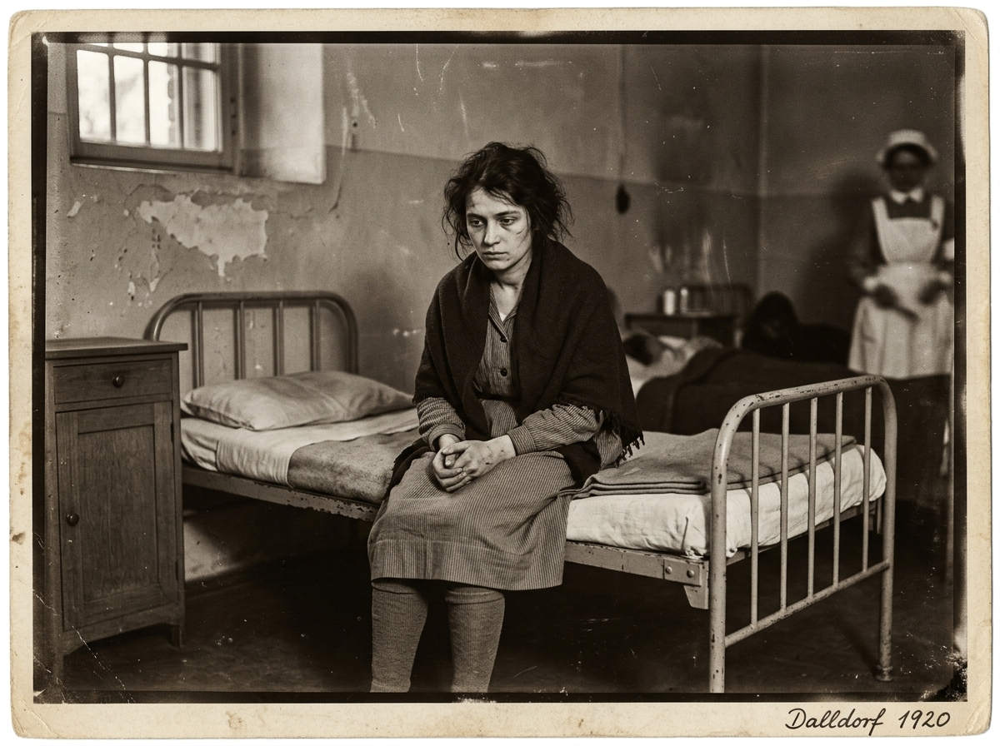

TERBUKA • SIAP DISELIDIKI

Kasus 1: Misteri Klaim Putri Anastasia & Darah Romanov
Seorang wanita di RSJ Dalldorf mengklaim sebagai Putri Anastasia, ahli waris jutaan Rubel Tsar Rusia. Ujilah kebenaran klaim ini menggunakan genetika pewarisan sifat.
Golongan Darah
Pautan Seks (Hemofilia)
Dihibrid Mendel
mtDNA
Antropologi Gigi